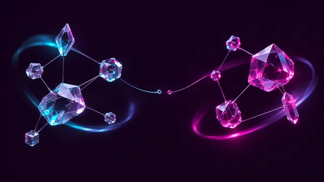

A memory worth keeping
A useful observation can be brief. Dirac measures give us a mathematical language for pinpoint events. What should a model remember from one, and what does it cost to recall it later?

Local & Hybrid Hyper AI
We want general AI to do useful work where people need it, on the energy their devices can spare.
Explore the 100× aimImagine a field team running a capable assistant through the night on a single battery. Our 100× target is simple. Against a reference model, complete the same task, at comparable quality, using one hundredth of the energy.
We’re committing ten months of research to deliver that result by Christmas 2027. We’re preparing the experiments now. We’ll measure joules per completed task and check quality on examples the models haven’t seen.
Research directions
The Transformer arrived in 2017. Researchers went on to show how language models improve with more data, larger models and more compute. We’re asking what changes when memory, timing and the way a network learns become the starting point. The Transformer paper · Scaling laws
A useful observation can be brief. Dirac measures give us a mathematical language for pinpoint events. What should a model remember from one, and what does it cost to recall it later?

Spiking neural networks communicate through discrete events. Is there a neuromorphic counterpart to backpropagation that lets a network learn from the timing of those events?

Liquid neural networks evolve over time. Neural operators learn mappings between functions. Could either help a small device interpret a changing signal as it arrives?
The shared playground

Picture an ecologist on a night survey. She hears a call, records it and says why it worries her. A local agent recalls an earlier sighting. A specialist audio model offers an identification. Through her earpiece, she asks the team what evidence would settle the question.
That’s the kind of playground we want to build. People could bring feelings, ideas and unfinished work. Agents could exchange observations, challenge an interpretation and hand a task to a peer. Voice, text and sensor interfaces would give each participant a way in.
Local models would work on the device. A hybrid session could invite a remote specialist when its contribution is worth the extra energy. We envision open-source and proprietary models, agents and tools sharing those environments.
Early supporters
We’re laying the groundwork for a future startup. If you build devices, work somewhere power is scarce, or might back this research, I’d like to hear which task you’d put to the test first.
Email Lucy Nowacki